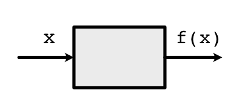

Machine Learning Engineering
Lecture 7
Derivatives
Lab Session
Topics
Python internals
ML Review
Preview
Lecture
Derivative Types
Loss

Symbolic Derivative
Issues
How do we handle higher-order functions?
def derivative(fn):
def inner(x):
...
return inner
d_f = derivative(f)Definition of Derivative

Difference
Approximate limit with small value
Central Difference

Multipleargs Difference
Lecture Quiz
Outline
Numerical Derivatives
Variables
Functions
Autodifferentiation
Goal
Write down arbitrary (python) functions
Automatically compute any derivative
Use this to fit models
Are these symbolic derivatives?
No
Don't get out mathematical function
Are these numerical derivatives?
No
Don't need to run samples nearby
Downsides
Needs more information than numerical derivatives
Needs to execute function unlike symbolic derivatives
Requires overriding number system
Derivative Checks
Property: All three of these should roughly match
Strategy
Replace numbers with Variables.
Replace mathematical function with Functions.
Variables track which Functions were applied
Autodifferentiation
Apply chain rule to the constructed graph
Code derivatives in to the graph
Variables and Functions
"Wrapping"
Class wraps around numbers
class Scalar(Variable): def __init__(self, value): self.value = value ...
Goal
Act like a numerical value to user
Record operations applied
Hide access to internal storage
How to make a Variable
Just wrap a standard value
x_1 = minitorch.Scalar(x_1) x_1.name = "x_1" # Optional for debugging
How to update a Variable
Have to use a Function
x_1 = minitorch.Scalar(x_1) x_1.name = "x_1" z = f.apply(x_1)
Box Diagrams
Box Diagrams

Code Demo
How does this Work
Arrows are Variables
Boxes are Functions

Functions
Functions
Functions are implemented as static classes
User implements forward and backward methods
Forward is \(f\) and backward is \(f'\)
Functions
Function \(f(x) = x \times 5\)
Implementation
class TimesFive(ScalarFunction): @staticmethod def forward(ctx, x): return x * 5\(x\) is unwrapped (python number)
Multi-arg Functions
Code
class Mul(ScalarFunction):
@staticmethod
def forward(ctx, x, y):
return x * yPython Details
Use apply for the above Functions
x = minitorch.Scalar(10., name="x") y = minitorch.Scalar(5., name="y") z = TimesFive.apply(x) out = TimesFive.apply(z)Apply unwraps, calls, and wraps again
Tricks
Use operator overloading to ensure that functions are called
out2 = x * y
Backwards
Coding Derivatives
For each \(f\) we need to also provide \(f'\)
This part can be done through local symbolic or numeric differentiation

Code
Backward use \(f'\)
Returns \(f'(x) \times d_{out}\)
class TimesFive(ScalarFunction): @staticmethod def forward(ctx, x): return x * 5 @staticmethod def backward(ctx, d_out): f_prime = 5 return f_prime * d_out
Picture
Code
What about \(f(x, y)\)
Returns \(f'_x(x,y) \times d_{out}\) and \(f'_y(x,y) \times d_{out}\):
class AddTimes2(ScalarFunction): @staticmethod def forward(ctx, x, y): return x + 2 * y @staticmethod def backward(ctx, d_out): return d_out, 2 * d_out